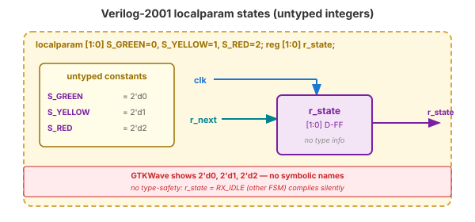
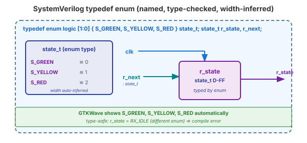
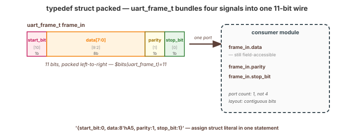
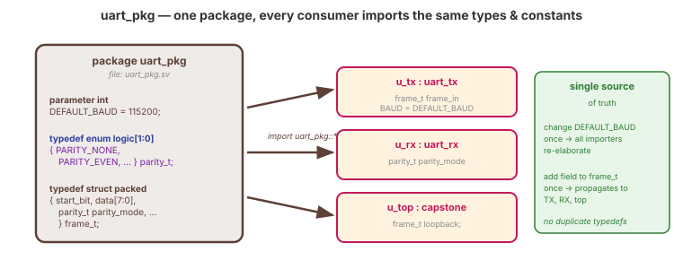
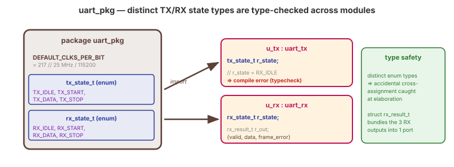

Video 4 of 4 · ~10 minutes
Dr. Mike Borowczak · Electrical & Computer Engineering · CECS · UCF
Large RTL codebases live and die by their type systems. ARM's CPU projects have central package files defining instruction opcodes, cache states, pipeline bundle types — referenced by hundreds of modules. Intel's ASIC flows require typedef enum for every FSM state. Without these features, thousand-module codebases would drown in localparam and port lists. Shared types are how large teams stay sane.
Your Week 4 capstone will have a handful of modules sharing state definitions. package lets you define them once. typedef enum lets the compiler type-check your FSM transitions. struct lets you bundle UART frame fields into one signal. Modest codebase, large effect.
“My FSM uses localparam [2:0] S_IDLE = 3'd0; ... — it works. What does enum add?”
Three things typedef enum adds that localparam cannot: (1) type safety — the compiler catches state = WRITE_REG if WRITE_REG belongs to a different enum. (2) named value debugging — in GTKWave, signals show S_BUSY instead of 3'd2. (3) width inference — no manual $clog2 arithmetic. Three bugs shut, three readability wins, zero silicon cost.
typedef enum is what localparam should have been. localparam was a hack for “no enum keyword in 1995.” Use enum now.
typedef enum for FSM StatesVERILOG-2001 (untyped localparam)
localparam [1:0]
S_GREEN = 2'd0,
S_YELLOW = 2'd1,
S_RED = 2'd2;
reg [1:0] r_state, r_next;
always @(posedge clk)
r_state <= r_next;
SYSTEMVERILOG (typedef enum)
typedef enum logic [1:0] {
S_GREEN,
S_YELLOW,
S_RED
} state_t;
state_t r_state, r_next;
always_ff @(posedge clk)
r_state <= r_next;
state_t is a named type I can reuse across modules. (2) Values auto-assigned 0, 1, 2 (or I can override). (3) Width is part of the type — no width declaration on every variable. Plus GTKWave shows S_GREEN not 2'd0.
struct for Bundled Signals// Bundle a UART frame into one struct
typedef struct packed {
logic start_bit; // 1 bit
logic [7:0] data; // 8 bits
logic parity; // 1 bit
logic stop_bit; // 1 bit
} uart_frame_t; // 11b packed L→R
// One signal, not four
uart_frame_t frame_in, frame_out;
// Field-level access:
assign frame_out.data = processed_byte;
// Or whole-struct literal:
assign frame_out = '{start_bit:0, data:8'hA5,
parity:1, stop_bit:1};
packed struct means the struct lives contiguously in memory as a flat bit vector — $bits(uart_frame_t) = 11, and you can treat frame_out as an [10:0] value. Ports that carry frames no longer need 4 separate signals; they carry one uart_frame_t. Port lists shrink; bundling is explicit; individual fields are still accessible.
package for Shared Types// File: uart_pkg.sv
package uart_pkg;
parameter int DEFAULT_BAUD = 115200;
typedef enum logic [1:0] {
PARITY_NONE, PARITY_EVEN,
PARITY_ODD, PARITY_MARK
} parity_t;
typedef struct packed {
logic start_bit;
logic [7:0] data;
parity_t parity_mode; // nested!
logic stop_bit;
} frame_t;
endpackage
// File: uart_tx.sv
import uart_pkg::*; // frame_t, parity_t, DEFAULT_BAUD
module uart_tx #(parameter BAUD = DEFAULT_BAUD) (
input frame_t frame_in,
// ...
);
package file defines all shared types and constants. Every module that needs them imports. Change the definition in one place, everyone sees the update. This is how real codebases scale from 10 modules to 1000 without drowning.
Your UART TX, UART RX, and top-level need a shared definition. Sketch a uart_pkg.sv for them.
package uart_pkg;
parameter int DEFAULT_CLKS_PER_BIT = 217;
typedef enum logic [1:0] {
TX_IDLE, TX_START,
TX_DATA, TX_STOP
} tx_state_t;
typedef enum logic [1:0] {
RX_IDLE, RX_START,
RX_DATA, RX_STOP
} rx_state_t;
typedef struct packed {
logic valid;
logic [7:0] data;
logic frame_error;
} rx_result_t;
endpackage
~3 minutes
▸ COMMANDS
cd lecture_examples/week4_day13/d13_s4_ex3/
make sim # iverilog -g2012 + vvp
make wave # opens tb_traffic_light_sv.vcd
# in gtkwave▸ IN GTKWAVE
r_state is shown as:
S_GREEN S_YELLOW S_RED
not as:
2'd0 2'd1 2'd2
(automatic — no manual VCD config)▸ KEY OBSERVATION
GTKWave reads the SV enum symbol table from the VCD file. State names appear automatically — no format gymnastics. This alone changes debug ergonomics. Identifying “we got stuck in S_WAITING_ACK” is faster than “we got stuck in 3'd4.”
$ yosys -p "read_verilog -sv day13_ex03_traffic_light_sv.sv; \
synth_ice40; stat"
=== traffic_light_sv ===
Number of cells: 7 ← same as Verilog-2001 version
SB_DFF: 2
SB_LUT4: 5
# SV types/packages/enums vanish at elaboration. The synthesis
# result is identical to hand-written Verilog-2001 with localparam.
# You pay nothing for the readability and type safety.Ask AI: “Refactor my UART design to use a shared package with typedef enums for states and a packed struct for the frame.”
TASK
AI introduces package + enum + struct.
BEFORE
Predict: one package file, separate TX/RX enums, packed frame struct.
AFTER
Strong AI uses import statements + packed struct. Weak AI inlines types per module.
TAKEAWAY
Good AI produces a single package. Bad AI duplicates definitions — defeats the purpose.
① typedef enum is what localparam should have been: type-safe, debuggable, reusable.
② packed struct bundles signals into a single-wire type with field access.
③ package is the single source of truth for shared types and constants.
④ Source-level features only. Same silicon, safer code, zero runtime cost.
Q1: What three things does typedef enum give you that localparam doesn't?
$clog2 gymnastics.Q2: What's the difference between packed and unpacked struct?
[N-1:0] value), usable on ports. Unpacked = collection of named fields, no bit ordering guarantee, primarily for testbenches.Q3: You import a package. Can you redefine one of its types locally in a module?
Q4: Do SV features (enum, struct, package) change the synthesized hardware?
🔗 End of Topic 13
Topic 14 · Assertions · AI Workflows · PPA · The Road Ahead
▸ WHY THIS MATTERS NEXT
Your testbenches so far check output values at specific times. Topic 14 adds assertions — executable specifications that watch for protocol violations continuously. Plus AI-assisted verification workflows, PPA methodology, and the road ahead in hardware engineering. This is the capstone of your formal HDL education — after tomorrow you'll have every tool needed to build real silicon.